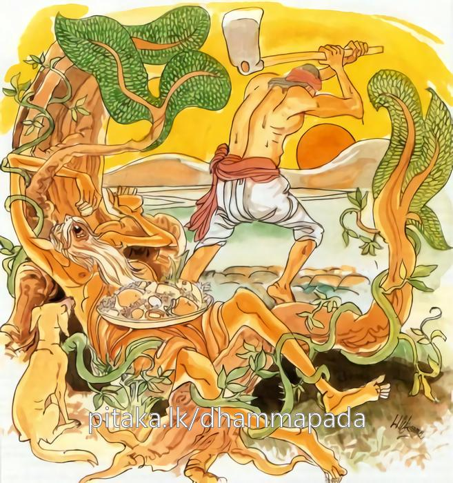

8-11 බෙල්ල කපාගැණීමට තැත් කළ භික්ෂු
මෙම කතාව ධම්මපද අටුවාවෙන් ද කියවන්න.
යො ච වස්සසතං ජීවෙ කුසීතො හීනවීරියො
එකාහං ජීවිතං සෙය්යො විරියමාරභතො දළ්හං.
කුසීත වූ (වත් පිළිවෙත් කිරීමෙහි හැදෑරීම් පිරුවීම්හි මැලි වූ), කායික චෛතසික වීර්ය්ය නැති, යම් පුඟුලෙක් ඉදින් හවුරුදු සියයක් ජීවත් වූයේ නමුදු, ඔහුගේ ජීවත් වීමට වඩා දැඩි කොට කායික චෛතසික වීර්ය්යය වඩන භික්ෂුහුගේ එක් දවසෙක ජීවත් වීම උතුමි.

සැවැත් නුවර වැසි එක් කුලපුත්රයෙක් බුදුරජුන්ගෙන් බණ අසා පැවිදි ව උපසම්පදාව ද ලැබී ය. පසු ව කළකිරී “මා වැනියක් හට ගිහිකම නො සුදුසු ය, මහණකම උඩ සිට මැරී යෑම හැම අතකින් ම උතුම් ය” යි මැරෙන්නට උපාය සොයමින් දවස් ගෙවී ය. දිනෙක වෙහෙර වැසි භික්ෂූන් වහන්සේලා ගිනිහල් ගෙයි උන් නයකු දැක ඌ අල්ලා කළයෙක ලා කට බැඳ එය ගෙණ වෙහෙරින් බැහැරට ගියහ. කළකිරී හුන් මහණ තෙමේත් දන් වළඳා එන්නේ, ඒ භික්ෂූන් දැක, “ඇවැත්නි! මේ කිමැ” යි විචාරා “නයෙකැ” යි කී කල්හි “මූ ගෙණ යන්නහු කොහි දැ” යි ඇසී ය. “මුගෙන් කරන්නට වැඩක් නැත, බැහැර ලන්නට ගෙණ යමු” යි භික්ෂූන් කී විට ඒ මහණ තෙමේ, “නයා ලවා දෂ්ට කරවා ගෙණ මැරෙමි” යි සිතා, “නයා මට දෙන්න, මම ඌ බැහැරලමි” යි නයා ඉල්ලා ගෙණ ගොස් කවුරුත් නැති තැනෙක හිඳ නයා ලවා දෂ්ට කරවා ගන්නට මහන්සි දැරී ය. එහෙත් නයා එහි උත්සාහවත් නො වී ය. එකල ඔහු කළයෙහි අත ලා නයා අල්ලා ඌ ඒ අතට මේ අතට කෙළේ ය. එහෙත් නයා දෂ්ට නො කෙළේ ය. ඒ වර නයා අල්ලා කට හරවා කටෙහි ඇඟිලිතුඩක් බැහී ය. එසේ කළ ද නයා දෂ්ට නො කෙළේ ය. මහණ තෙමේ “මොකෙක් ද මූ, මූ නයෙක් නො වේ, මූ ගැරඩියෙක්” යි වීසි කොට වෙහෙරට ගියේ ය.
භික්ෂූන් වහන්සේලා ‘කොහොම ද, නයා බැහැර ලෑවෙහි දැයි ඇසූ හ. ‘ඔව්! බැහැර ලෑවෙමි, මූ නයෙක් නො වේ, ගැරඩියෙකැ යි මහණුන් කී කල්හි ‘මොනවා, ඌ නයෙක්, ගැරඬියෙක් නො වේ, අල්ලා කළයෙහි දමන වේලේ පෙණය පුප්පා පිම්බේ ය, අල්ලා ගන්නා ලද්දේ ද ඉතා අමාරුවෙනි, තමුන්නාන්සේ ඌ ගැරඩියෙකැ යි කියන්නහු මොනවා දැක දැයි ඇසූහ. ‘ආයුෂ්මත්නි! ඌ ලවා මම දෂ්ට කරවා ගැණීමට බොහෝ වේලාවක් නොයෙක් ලෙසින් මහන්සි දැරීමි, අන්තිමේ දී මාගේ ඇඟිල්ල උගේ කට තුළට බැහීමි, එහෙත් ඌ මට දෂ්ට නො කෙළේ ය, මා ඌ ගැරඬියෙකැ’ යි කියනු ලබන්නේ මේ නිසා ය’ යි ඒ මහණ කීයේ ය. එවිට භික්ෂූන් වහන්සේලා නිහඬ වූහ.
දිනෙක අම්බැට්ටයෙක් දැළිපිහියා දෙකක් ගෙණ විහාරයට ගොස් එකක් පසෙක තබා එකක් ගෙණ භික්ෂූන්ගේ හිසරැවුල් බාන්නට පටන් ගත්තේ ය. මේ අතර කළකිරී සිටි මහණ තෙමේ බිම තුබූ පිහිය ගෙණ, “මේ කරයෙන් බෙල්ල කපා ගෙණ මැරෙමි” යි ගසකට හේතු වී පිහිය බෙල්ලට තබා උපසම්පදා වූ දා පටන් තමන් රැකි සීලය ගැණ සිහි කෙළේ ය. එවිට ඔහුට “තමන් රැකි සීලය නිර්මලචන්ද්රමණ්ඩලයක් සේ අතිශය නිර්මල ය යි ද, ජාතිරඞ්ගමාණික්යයක් සේ ප්රභාස්වරය” යි ද වැටහුනේ ය. මෙසේ තම සීලයෙහි නිර්මලත්වය දුටු ඔහුගේ සිරුර ප්රීතියෙන් පිණා ගියේ ය. එවිට ඔහු ඒ ප්රීතිය යටපත් කොට විදර්ශනා වඩා පිළිසැඹියාවන් ලබා රහත්බවට පැමිණ පිහියත් ගෙණ විහාරයට පිවිසියේ ය. එවිට භික්ෂූන් වහන්සේලා “තමුන්නාන්සේ මෙතෙක් වේලා කොහි ගියහු දැ” යි ඇසූවිට, “මම මේ කරයෙන් බෙල්ල කපා ගෙණ නහින්නට සිතා වෙහෙරින් බැහැර ගියෙමි” යි හෙතෙමේ කී ය.
ඉක්බිති භික්ෂූන් වහන්සේලා, “නො මළහු මක්නිසා දැ” යි ඇසූ විට “නහින්නට සිතා කරය ගෙණ ගිය නමුත්, දැන් මම අර්හන්මාර්ගඥානකරයෙන් සියලු කෙලෙස් කපා හැරැ සිටිමි, මම දැන් එබඳු ආවුධයක් අතට ගැණීමෙහි පවා නො සුදුස්සෙක් ව සිටිමි” යි කීයේ ය. එකල “මෙතෙමේ බොරු දෙසා” යි සිතා භික්ෂූන් වහන්සේලා බුදුරජුන් වෙත ගොස් එබව දැන් වූහ. උන්වහන්සේ “මහණෙනි! රහත්හු නම් සියතින් තම ජීවිතය නො නසන්නාහ” යි වදාළ කල්හි, ඔවුහු, “ස්වාමීනි! බුදුරජානන් වහන්සේ, මේ මහණ රහතෙකැ යි වදාරන සේක් ද, මොහුට රහත් වීමට වාසනා ගුණයෙක් තුබුනේ නම්, කුමක් නිසා මෙතෙමේ උකටලී වී ද, මොහුට රහත් වීමට ඇති වාසනාව කුමක් ද, නයා මොහුට දෂ්ට නො කෙළේ කුමක් නිසා දැ” යි අසා සිටියහ. “මහණෙනි! ඒ නයා, මෙයින් තෙවන අත්බවෙහි මොහුගේ දාසයෙක් වි ය, එහෙයින් ඒ නයා මොහු එදා ස්වාමියා යි සිතා දෂ්ට නො කළේ ය” යි වදාළ සේක. මහණ තෙමේ එතැන් සිට සර්පදාස යි ප්රසිද්ධ විය.
කාශ්යප සර්වඥයන් වහන්සේගේ කාලයෙහි එක්තරා කුල පුත්රයෙක් උන්වහන්සේ වෙතින් බණ අසා උපන් සංවේගයෙන් පැවිදි වි ය, පැවිද්දෙන් වැඩි දවස් නො යවා ම උපසම්පන්න ද වි ය, ඉන් පසු ඔහු තුළ බලගතු නො ඇල්මෙක් හටගත්තේ ය, එවිට ඔහු ඒ බව තම යහළු මහණක්හට කී ය, හෙතෙමේ මේ මහණහුට ගිහිබවෙහි දොස් දක්වා කරුණු කියා පෑ ය, ඒ ඇසූ උකටලී මහණ නැවැතත් සසුනෙහි ඇල්ම උපදවා ගත්තේ ය, සසුනෙහි ආලය හැර සිටි දවසෙහි පසෙක දමා තිබීමෙන් දූවිලි කා දිරුම් කඩට ගොස් තුබූ සිවුරු පිරිකර ඔහු කුඩා ගල්කෙමියක් ලඟට ගොස් එහි ලා සෝදා පිරිසිදු කරන්නට පටන් ගත්තේ ය, යහළු මහණ ද ඔහු ලඟ ම සිටියේ ය, එකල මේ මහණ තෙමේ, “පින්වත! සිවුරු හැර දමා යන්නට සිතා සිටි මම බලාපොරොත්තු වූයේ එසේ යන විට මේ පිරිකර ඔබතුමන්ට දීලා යන්නට ය” යි යහළුවාට දැන් වී ය.
එ තැන් සිට යහළු මහණ තෙමේ, මේ පිරිකර ටික තමන් ගන්නට සිතා “ආයුෂ්මතුනි! මේ පැවිද්දෙන් ඇති වැඩෙක් නම්, දැන් මට නො පෙනේ, මේ ජීවිතය ලොකු කරදර එකක්, පාකබලක් ගෙණ ගෙයක් ගානේ හිඟමන් යන්නට ඕනෑ, දින පතා ම එය නො කොළොත් කා බී අවසාන යි, උනුන්ගෙන් කොතරම් ඇණුම් බැණුම් ඇසිය යුතු දැ යි සිතා බලන්න, අපි ගිහිගෙයි සිටින්නමෝ නම්, අපට මොකවත් හරි හම්බ කර ගෙණ අඹුදරුවනුත් සමග එක් ව කා බී ප්රීතියෙන් කල් දවස ගෙවිය හැකි ය, එවිට කිසිවකුගෙන් ඇණුමෙක් බැණුමෙක් නැතැ” යි පැවිද්ද ලොකු කරදරයක් කොට කියා පෑයේ ය, ගිහිකමෙහි අනුසස් කීයේ ය, එවිට අනික් මහණ තෙමේ ඔහුගේ මේ කතාව අසා කළකිරී, “මෙයා හරි මිනිහෙක්, මම සසුනෙහි කළකිරී සිටිමි යි කී කල්හි මට ගිහිකමේ දොස් කියා සසුනෙහි අනුසස් කීයේ ය, දැන් ගිහිකමේ අනුසස් කියා සසුනෙහි දොස් කියන්නේ ය, ඒ මොන පුදුමයෙක් ද, මොකද මේ” යි සිතන්නේ, තමන් අයත් සිවුරු පිරිකරට ඇති ආශාවෙන් මෙසේ කියන බව දැන, තම සිත හික්මවා ගත්තේ ය, මොහු මෙසේ කසුප් බුදුරජුගේ කාලයෙහි මහණකු සසුනෙහි උකටලී කළ බැවින් දැන් මොහුට උකටලී බව හට ගත්තේ ය, එදා අවුරුදු විසි දහසක් කළ ඒ මහණකම මොහුට දැන් රහත් වීමට හේතු වී යයි බුදුරජානන් වහන්සේ වදාළ සේක.
නැවැත භික්ෂූන් වහන්සේලා “ස්වාමීනි! මේ මහණ, කර කැත්ත බෙල්ල තබා ගෙණ සිටියේ ම රහත් වි ය, මෙතරම් ඉක්මනට රහත් විය හැකි දැ” යි ඇසූහ. “ඔව්, මහණෙනි! රහත් විය හැකි යි, වීර්ය්යවත් පිණැති භික්ෂුහට පය ඔසවා බිම තබත් ම පය බිම වදින්නට පෙරාතුව ම අර්හනමාර්ගඥානය ලැබිය හැකි ය, කම්මැලියකුට ඒ ලබනු බැරි ය, එහෙයින් කම්මැලිකමින් අවුරුදු සියයක් ජීවත් වීමට වඩා වීර්ය්යය කරන්නකු මොහොතක් ජීවත්වීම ශ්රේෂ්ඨ වන්නේ ය, වීර්ය්යය කරන්නාගේ ජීවත්වීම ම දෙවියන් සහිත ලෝකයට හිතකර ය, වැඩදායක ය” යි වදාරා අනුසන්ධි ගළපා මේ ධර්මදේශනාව කළ සේක:
යො ච වස්සසතං ජීවෙ කුසීතො හීනවීරියො,
එකාහං ජීවිතං සෙය්යො විරියමාරභතො දළ්හන්ති.
කුසීත වූ වීර්ය්යය රහිත වූ යමෙක් අවුරුදු සියයක් ජීවත් වන්නේ නමුත් (එයට වඩා) දැඩි කොට වීර්ය්යය කරන්නහුගේ එක් දවසේ ජීවිතය උතුම් ය.
යො ච වස්සසතං ජීවෙ = යමෙක් අවුරුදු සියයක් ජීවත් වන්නේ නමුත්.
කුසීතො = අලස වූ.
කුසීත නම්, කාමවිතර්කාදියෙන් මැඩී කල් දවස ගෙවන්නේ ය.
‘කුසීතොති කාමවිතක්කාදීහි තීහි විතක්කෙහි වීතිනාමනකපුග්ගලො’ යනු අටුවා ය. [1]
හීන වීරියො = වීර්ය්යය රහිත වූ. වීර්ය්යය නැත්තා වූ. [2]
එකාහං ජීවිතං සෙය්යො = එක් දවසක් ජීවත් විම උතුම් වේ. [3]
විරියං ආරභතො දළ්හං = දැඩි කොට වීර්ය්යය කරන්නහුගේ.
ආලම්බනෝපනිද්ධ්යාන - ලක්ෂණෝපනිද්ධ්යාන යන දෙවැදෑරුම් ධ්යානයන් ඉපද වීමට සමර්ත්ථ වූ වීර්ය්යය කරන්නහු, මෙයින් ගණිත්.
දළහං යනු, ක්රියා විශේෂණ යි. නාමවිශේෂණ - ක්රියා විශේෂණ, යි විශේෂණ දෙකකි. කාරකපදයකට විශේෂණ වූයේ නාම විශේෂණ නම්, ක්රියාපදයකට විශේෂණ වූයේ ක්රියා විශේෂණ නම්. ක්රියා විශේෂණය, බහිද්ධ - අබහිද්ධ වශයෙන් ද වැදෑරුම් ය. සියලු ආලපන ක්රියාවෙන් පිටත්හි බැවින් ක්රියාව හා අසම්බන්ධ බැවින් බහිද්ධක්රියාවිශේෂණ නම්. ‘මුදුං, දළ්හං’ යනාදි ක්රියා විශේෂණ ක්රියාවෙන් පිටත්හි නො වන බැවින් අබහිද්ධක්රියාවිශේෂණ නම්. ඒ ද ප්රථමාවිභක්ත්යන්ත අබහිද්ධික්රියා විශේෂණය, ද්විතීයාවිභක්ත්යන්ත අබහිද්ධක්රියා විශේෂණ, ය යි දෙ පරිදි ය. ක්රියාව අකර්මකධාතුවකින් සිද්ධ නම්, ක්රියා විශේෂණය ප්රථමාවිභක්තිය ගණී. ‘සුඛං සයති’ යනු එයට නිදසුන් ය.
‘සයති’ යන සි-සයෙ, යන අකර්මක ධාතුවෙන් සිද්ධ හෙයින් ‘සුඛං’ යන ක්රියා විශේෂණය ප්රථමාවිභක්තිය ගත්තේය. ආරභතො, යන ‘රභ රාභසෙස’ යන සකර්මකධාතුවෙන් සිද්ධ හෙයින් ‘දළ්හං’ යන ක්රියාවිශේෂණය ද්වීතීයාවිභක්තිය ගත්තේ ය. සද්දසාරත්ථජාලිනියෙහි එය මෙසේ කීහ:
අබහිද්ධා දුධා හොති පඨමාදුතියන්තතො,
සකම්මකාය දුතියා අකම්මා පඨමා මතා.
මෙහි ලා ආචාර්ය්යයමතභේද ඇත්තේ ය. ශබ්ද ශාස්ත්රීය ග්රන්ථයන්ගෙන් ඒ දත යුතු ය.
ක්රියා විශේෂණය, නපුංසකලිංගික එකවචනාන්තැ යි ද ශබ්ද ශාස්ත්රයෙහි ලා එය ධාතුවිශේෂණැ යි ද, ශාසනයෙහි භාවනපුංසකැ, යි ද කියත්. නිරුක්තිසඞ්ග්රහය ඒ මෙසේ කිය යි:
ක්රියාවිසෙසනං යාව තං සබ්බං හි නපුංසකෙ,
සියා ච එකවචනං යථා භික්ඛු සුඛං ඨිතො.
.
ක්රියාවිසෙසනං සත්ථෙ වුත්තං ධාතුවිසෙසනං,
භාවනපුංසකන්තෙය්ය ව සාසනෙ සමුදීරිතං.
ක්රියා විශේෂණ, නපුංසක එකවවන වූයේ භූ - කර ධාතුන්ගේ අර්ත්ථ සියලු ධාතූන්හි විද්යාමාන බැවිනි. ‘භූ කරා සබ්බධාත්වත්ථෙසු එව සන්ති’ යනු ආප්ත යි.
කම්මැලි ව සියක් අවුරුද්දක් ජීවත් වීමට වඩා වීර්ය්යය දැඩි ව කරමින් එක් දවසක් ජීවත් වීම උතුම් ය යනු කෙටි අදහස ය ගාථාවේ ඇත්තේ.
සර්පදාසස්ථවිර වස්තුව නිමි.